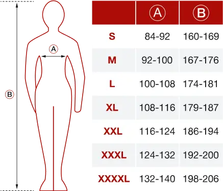

<section class="section-specifications">
   <div class="ui-container">
      <div class="specific-img">
         
      </div>

      <div class="specific">
         <h4 left class="ui-subtitle">Характеристики</h4>
         <h2 left withStrong block class="section-title-product"><strong>особенности </strong> и характеристики</h2>
         
         <p class="specific-text animate">Одноразовые защитные комбинезоны TECRON™ Pro созданы по высоким стандартам качества специально для защиты от химических
         реагентов и промышленных загрязнений, отлично подойдут для применения в сельскохозяйственных работах, нефтяной и
         нефтехимической, автомобильной, пищевой промышленности, медицине и т.д.</p>

         <ul class="specific-list">
            <li class="specific-list-item animate">
               <h5 lightActive class="has-children list-item-title">Особенности и преимущества</h5>
               <ul class="content list-space">
                  <li>
                     <h6 class="content-title">Прочный материал (63-65 г/м2)</h6>
                     <p class="text">Использование качественного, ламинированного микропористого полипропилена плотностью 63-65 гр/м2 при производстве комбинезонов TECRON™ Pro гарантирует надёжность и целостность изделия.</p>
                  </li>
                  <li>
                     <h6 class="content-title">Двухзамковая молния</h6>
                     <p class="text">Молния, бегунок которой позволяет расстёгивать комбинезон в двух направлениях как снизу-вверх, так и сверху-вниз, что делает его более практичным.</p>
                  </li>
                  <li>
                     <h6 class="content-title">Прилегающие манжеты рукавов</h6>
                     <p class="text">В рукава комбинезонов вшиты эластичные манжеты, которые мягко и удобно прилегают к запястьям рук, не сдавливая их и не мешая рабочему процессу.</p>
                  </li>
                  <li>
                     <h6 class="content-title">Защитная планка застёжки</h6>
                     <p class="text">Молния и бегунок скрыты в комбинезоне под специальной планкой, что гарантирует недопустимость повреждения молнии краской, а также рабочей поверхности молнией.</p>
                  </li>
                  <li>
                     <h6 class="content-title">Трехсоставной капюшон</h6>
                     <p class="text">Комбинезон TECRON™ Pro оснащён трехсоставным капюшоном, который комфортно сидит на голове и хорошо защищает голову от попадания лакокрасочных и нефтехимических материалов.</p>
                  </li>
                  <li>
                     <h6 class="content-title">Укрепленные швы ПВХ лентой</h6>
                     <p class="text">Швы комбинезона TECRON™ Pro прошиты лентой ПВХ, что придает дополнительную прочность швам и препятствует попаданию аэрозолей или жидкостей через швы.</p>
                  </li>
               </ul>
            </li>

            <li class="specific-list-item animate">
               <h5 lightActive class="has-children list-item-title">Области применения</h5>
               <ul point class="content">
                  <li class="text">Защита от масел, смол и нефтепродуктов</li>
                  <li class="text">Работа в "чистых помещениях" и стерильных помещениях</li>
                  <li class="text">Атомная промышленность</li>
                  <li class="text">Сельское хозяйство</li>
                  <li class="text">Пищевая промышленность</li>
                  <li class="text">Очистка производственных помещений и оборудования</li>
                  <li class="text">Утилизация и переноска асбеста</li>
                  <li class="text">Фармацевтическая промышленность</li>
                  <li class="text">Экстренные службы, МЧС, аварийно-спасательные службы</li>
               </ul>
            </li>

            <li class="specific-list-item animate">
               <h5 lightActive class="has-children list-item-title">Соответствие стандартам</h5>
               <div class="content">
                  <h6 class="content-title mb10">Комбинезон соответствует стандартам:</h6>
                  <ul class="content-list">
                     <li class="text">TYPE 5B EN ISO 13982-1:2004</li>
                     <li class="text">TYPE 6B EN 13034:2005+A1:2009</li>
                     <li class="text">EN 1073-2:2002</li>
                     <li class="text">EN 14126:2003</li>
                     <li class="text">EN 1149-5:2008</li>
                     <li class="img"></li>
                     <li class="text">ТР ТС 019/2011</li>
                     <li class="text">ГОСТ 12.4.173-87</li>
                     <li class="text">ГОСТ Р 12.4.288-2013</li>
                     <li class="text">ГОСТ 12.4.251-2013</li>
                  </ul>
                  <p class="text mt40">Комбинезон препятствует проникновению 100% твердых соединений, водных, маслянистых и щелочных растворов.</p>
               </div>
            </li>

            <li class="specific-list-item animate">
               <h5 lightActive class="has-children list-item-title">Характеристики</h5>
               <ul class="content">
                  <li class="text">
                     <span class="content-title">Класс защиты: </span>4, 5, 6
                  </li>

                  <li class="text">
                     <span class="content-title">Уровень защиты: </span>З, Пн, Пм, Вн, Нм, Щ30, К30
                  </li>

                  <li class="text">
                     <span class="content-title">Состав основного материала: </span>полипропилен 58% + полиэтилен 42%
                  </li>

                  <li class="text">
                     <span class="content-title">Плотность материала: </span>63-65 г/м2
                  </li>

                  <li class="text">
                     <span class="content-title">Цвет: </span>белый
                  </li>

                  <li class="text">
                     <span class="content-title">Размерный ряд: </span>S - XXXXL
                  </li>

                  <li class="text">
                     <span class="content-title">Коробка: </span>25 шт.
                  </li>

                  <li class="text">
                     <span class="content-title">Вес 1 единицы: </span>220 - 270г (в зависимости от размера)
                  </li>

                  <li class="text">
                     <span class="content-title">Размер коробки: </span>44х28х34 см
                  </li>

                  <li class="text">
                     <span class="content-title">Вес коробки (Брутто): </span>6,3 - 7,6кг (в зависимости от размера)
                  </li>

                  <li class="flex">
                     <p class="text mb15 mt40">Размерная сетка:</p>
                     
                  </li>
               </ul>
            </li>
         </ul>
      </div>
   </div>
</section>